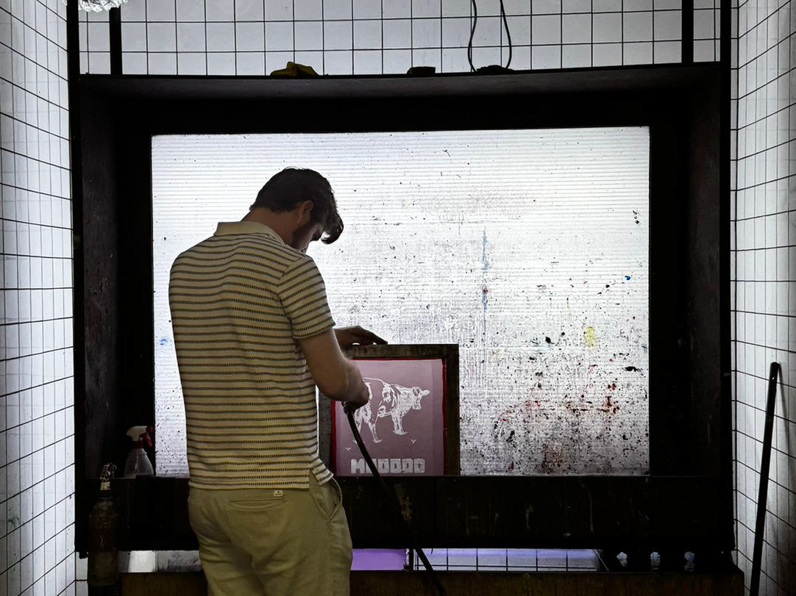
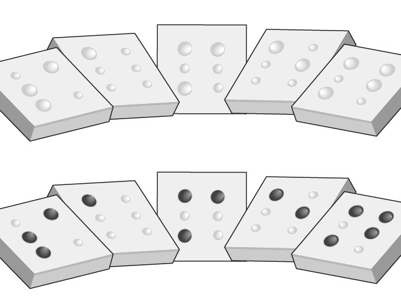
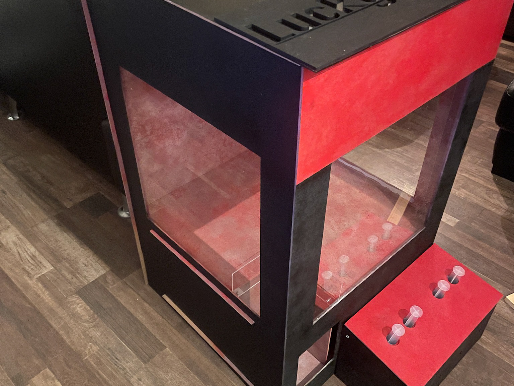

PROJ_01
Welcome to my digital workshop. My name is Casper (Delft, '97). I bridge the gap between atoms and bits.
Rooted in woodworking and physical craft—from building custom cabinets inspired by Poul Cadovius wall units to floating benches with French cleats—I now fuse this maker-mindset with the digital landscape of Communication and Multimedia Design (CMD) at Hogeschool Utrecht.
Whether I'm architecting a private Linux AI Homelab, organizing retro gaming communities (150+ members), or designing immersive spatial installations, my goal is to pull you out of reality and into an unforgettable story.

Select a project to inspect technical specifications and high-resolution galleries.





Ready to collaborate or have a question? Send a data packet directly to my terminal.